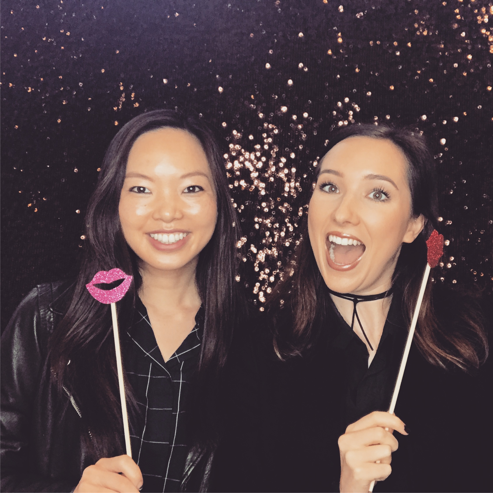
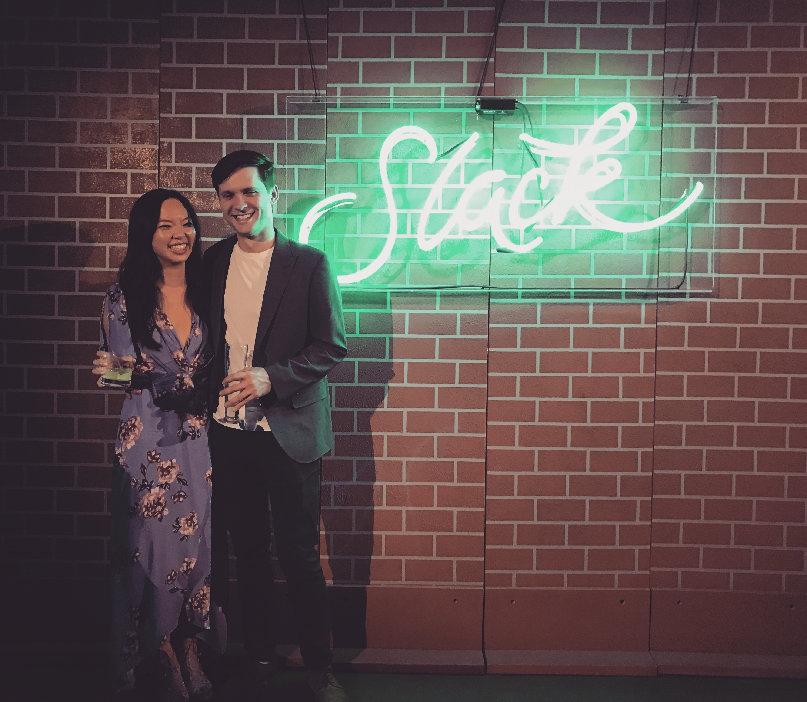

Kathryn Cheng
About
I’m a twenty-something currently living in San Francisco, CA.
I’m a strategic marketer by day, and an aspiring web developer by night.
Fun Facts
- Hometown: Wellesley, MA
- Zodiac Sign: Scorpio
- Favorite Food: Lobster
- Last Place Traveled: Santa Barbara, CA
- Cocktail of Choice: Margarita
- Guilty Pleasure: Watching reality TV
- Can’t Live Without: My jade roller

